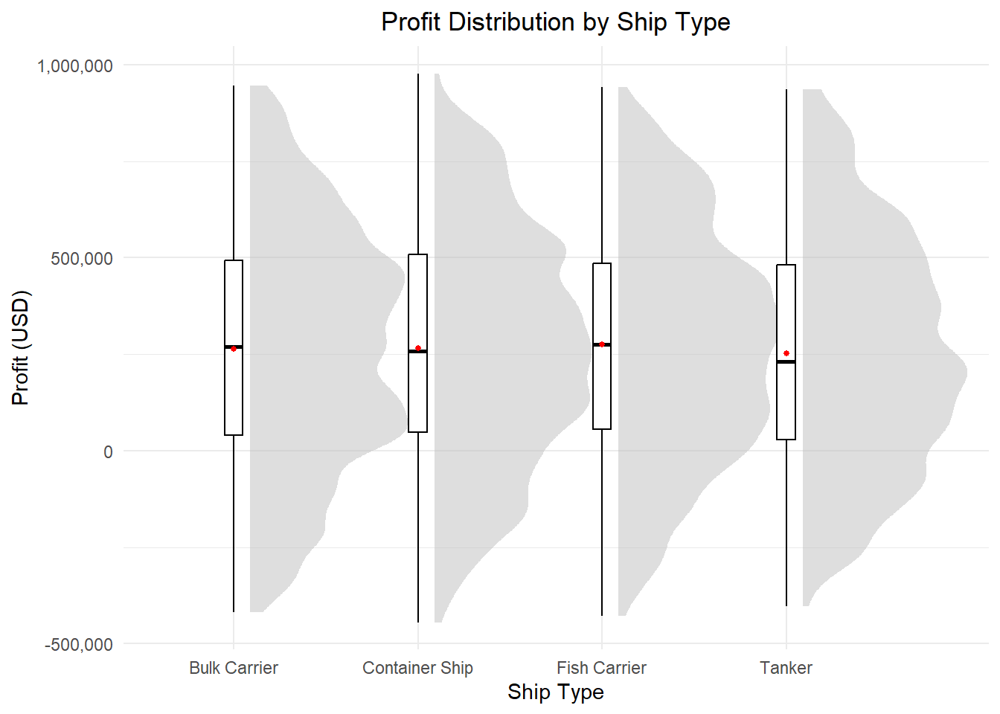

pacman::p_load(ggplot2,dplyr,DT,crosstalk,patchwork,plotlyhaven,SmartEDA,tidyverse,tidymodels,ggdist,ggridges, ggthemes,colorspace,scales,ggiraph)Take-home Exercise 1
Overview
1.1 Background
1.2 ObjectiveAnalyze the profitability of different ship types
What is the most profitable ship type?
Which ship type generates the highest revenue? Which costs the least?
Analyze the trend of different ship types
What is the trend of the profit in different ship type
Analyze what numerical variable influence the profit the most
Exploratory Data Analysis (EDA): Identify trends and patterns in ship performance and operational efficiency.
Clustering Analysis: Segment ships based on performance metrics and categorical attributes.
Getting started
Installing Libraries
Importing Data
ship_original <- read_csv("data/Ship_Performance_Dataset.csv")Prepare data
Select variable and filtering data
ship = ship_original %>% filter(Ship_Type != "None")ship# A tibble: 2,600 × 18
Date Ship_Type Route_Type Engine_Type Maintenance_Status
<date> <chr> <chr> <chr> <chr>
1 2023-06-04 Container Ship None Heavy Fuel Oil (HF… Critical
2 2023-06-11 Fish Carrier Short-haul Steam Turbine Good
3 2023-06-18 Container Ship Long-haul Diesel Fair
4 2023-06-25 Bulk Carrier Transoceanic Steam Turbine Fair
5 2023-07-02 Fish Carrier Transoceanic Diesel Fair
6 2023-07-09 Fish Carrier Long-haul Heavy Fuel Oil (HF… Fair
7 2023-07-16 Fish Carrier Transoceanic Heavy Fuel Oil (HF… Critical
8 2023-07-23 Container Ship Short-haul Diesel Critical
9 2023-08-06 Container Ship Long-haul Diesel Fair
10 2023-08-13 Fish Carrier Short-haul Steam Turbine Fair
# ℹ 2,590 more rows
# ℹ 13 more variables: Speed_Over_Ground_knots <dbl>, Engine_Power_kW <dbl>,
# Distance_Traveled_nm <dbl>, Draft_meters <dbl>, Weather_Condition <chr>,
# Cargo_Weight_tons <dbl>, Operational_Cost_USD <dbl>,
# Revenue_per_Voyage_USD <dbl>, Turnaround_Time_hours <dbl>,
# Efficiency_nm_per_kWh <dbl>, Seasonal_Impact_Score <dbl>,
# Weekly_Voyage_Count <dbl>, Average_Load_Percentage <dbl>checking missing value
colSums(is.na(ship)) Date Ship_Type Route_Type
0 0 0
Engine_Type Maintenance_Status Speed_Over_Ground_knots
0 0 0
Engine_Power_kW Distance_Traveled_nm Draft_meters
0 0 0
Weather_Condition Cargo_Weight_tons Operational_Cost_USD
0 0 0
Revenue_per_Voyage_USD Turnaround_Time_hours Efficiency_nm_per_kWh
0 0 0
Seasonal_Impact_Score Weekly_Voyage_Count Average_Load_Percentage
0 0 0 create profit variable
ship <- ship %>%
mutate(profit = Revenue_per_Voyage_USD - Operational_Cost_USD)head(ship)# A tibble: 6 × 19
Date Ship_Type Route_Type Engine_Type Maintenance_Status
<date> <chr> <chr> <chr> <chr>
1 2023-06-04 Container Ship None Heavy Fuel Oil (HFO) Critical
2 2023-06-11 Fish Carrier Short-haul Steam Turbine Good
3 2023-06-18 Container Ship Long-haul Diesel Fair
4 2023-06-25 Bulk Carrier Transoceanic Steam Turbine Fair
5 2023-07-02 Fish Carrier Transoceanic Diesel Fair
6 2023-07-09 Fish Carrier Long-haul Heavy Fuel Oil (HFO) Fair
# ℹ 14 more variables: Speed_Over_Ground_knots <dbl>, Engine_Power_kW <dbl>,
# Distance_Traveled_nm <dbl>, Draft_meters <dbl>, Weather_Condition <chr>,
# Cargo_Weight_tons <dbl>, Operational_Cost_USD <dbl>,
# Revenue_per_Voyage_USD <dbl>, Turnaround_Time_hours <dbl>,
# Efficiency_nm_per_kWh <dbl>, Seasonal_Impact_Score <dbl>,
# Weekly_Voyage_Count <dbl>, Average_Load_Percentage <dbl>, profit <dbl>3.Exploratory Data Analysis- ship type
3.1 ship type
ship type & profit
ggplot(ship, aes(x = Ship_Type, y = profit)) +
stat_halfeye(adjust = 0.5,
justification = -0.1,
.width = 0,
point_colour = NA,
fill = "gray",
alpha = 0.5) + # 設定透明度
geom_boxplot(width = 0.20,
outlier.shape = NA,
fill = "white",
color = "black") +
stat_summary(fun = mean,
geom = "point",
size = 1,
color = "red",
fill = "red") +
labs(title = "Profit Distribution by Ship Type",
x = "Ship Type", y = "Profit (USD)") +
theme_minimal() + theme(plot.title = element_text(hjust = 0.5))
ship type & avg profit
ship_avg_profit <- as.data.frame(ship) %>%
group_by(Ship_Type) %>%
summarise(Average_Profit = mean(profit, na.rm = TRUE))
y_min <- floor(min(ship_avg_profit$Average_Profit) / 1000) * 1000 # 取最小千位
y_max <- ceiling(max(ship_avg_profit$Average_Profit) / 1000) * 1000 # 取最大千位
y_breaks <- seq(y_min, y_max, by = 5000) # 設定間距為 2000 (可調整)
y_lower_limit <- y_min - 5000 # ✅ 讓 Y 軸從比最小值稍低的位置開始
# 自定義 Tooltip 顯示格式 (僅顯示平均利潤)
tooltip <- function(y, accuracy = 1) {
profit <- scales::number(y, accuracy = accuracy, big.mark = ",")
paste("Average Profit: ", profit, "USD")
}
# 繪製互動式長條圖 (含 tooltip)
gg_point <- ggplot(data = ship_avg_profit,
aes(x = Ship_Type, y = Average_Profit)) +
geom_col_interactive(aes(tooltip = tooltip(Average_Profit)),
fill = "lightblue") + # ✅ 只顯示平均利潤
scale_y_continuous(breaks = y_breaks, labels = scales::comma) + # ✅ 設定 Y 軸間距
coord_cartesian(ylim = c(y_lower_limit, y_max)) + # ✅ 不讓 Y 軸從 0 開始
labs(title = "Average Profit by Ship Type",
x = "Ship Type", y = "Average Profit (USD)") +
theme_minimal() +
theme(
axis.text.y = element_text(size = 10, angle = 0, hjust = 1), # ✅ 調整 Y 軸標籤字體大小
axis.text.x = element_text(size = 12), # ✅ 調整 X 軸標籤字體大小
plot.title = element_text(hjust = 0.5, size = 14, face = "bold") # ✅ 讓標題置中 & 加粗
)
# 轉換為互動式圖表
girafe(ggobj = gg_point, width_svg = 8, height_svg = 8 * 0.618)# ✅ 讓 Tooltip 同時顯示 Revenue & Cost
ship_avg_data <- (ship) %>%
group_by(Ship_Type) %>%
summarise(
Avg_Revenue = mean(Revenue_per_Voyage_USD, na.rm = TRUE),
Avg_Cost = mean(Operational_Cost_USD, na.rm = TRUE)
)
# 設定各自的 Y 軸範圍
y_min_cost <- floor(min(ship_avg_data$Avg_Cost) / 1000) * 1000
y_max_cost <- ceiling(max(ship_avg_data$Avg_Cost) / 1000) * 1000
y_breaks_cost <- seq(y_min_cost, y_max_cost, by = 2000)
y_min_revenue <- floor(min(ship_avg_data$Avg_Revenue) / 1000) * 1000
y_max_revenue <- ceiling(max(ship_avg_data$Avg_Revenue) / 1000) * 1000
y_breaks_revenue <- seq(y_min_revenue, y_max_revenue, by = 5000)
p1 <- ggplot((ship_avg_data),
aes(x = Ship_Type, y = Avg_Cost)) +
geom_col_interactive(
aes(tooltip = paste0("Avg Cost: ", scales::comma(Avg_Cost), " USD",
"\nAvg Revenue: ", scales::comma(Avg_Revenue), " USD"),
data_id = Ship_Type),
fill = "salmon"
) +
scale_y_continuous(breaks = y_breaks_cost, labels = scales::comma) +
coord_cartesian(ylim = c(y_min_cost - 500, y_max_cost)) +
labs(title = "Average Operational Cost", x = "Ship Type", y = "Avg Cost (USD)") +
theme_minimal() +
theme(
axis.text.y = element_text(size = 10, angle = 0, hjust = 1),
axis.text.x = element_text(size = 5, angle = 0),
plot.title = element_text(hjust = 0.5, size = 10, face = "bold"),
axis.title.x = element_text(size = 10), # X 軸標題字體大小
axis.title.y = element_text(size = 10)
)
# ✅ 讓 Revenue 長條圖也顯示 Cost
p2 <- ggplot((ship_avg_data),
aes(x = Ship_Type, y = Avg_Revenue)) +
geom_col_interactive(
aes(tooltip = paste0("Avg Revenue: ", scales::comma(Avg_Revenue), " USD",
"\nAvg Cost: ", scales::comma(Avg_Cost), " USD"),
data_id = Ship_Type),
fill = "lightblue"
) +
scale_y_continuous(breaks = y_breaks_revenue, labels = scales::comma) +
coord_cartesian(ylim = c(y_min_revenue - 5000, y_max_revenue)) +
labs(title = "Average Revenue per Voyage", x = "Ship Type", y = "Avg Revenue (USD)") +
theme_minimal() +
theme(
axis.text.y = element_text(size = 10, angle = 0, hjust = 1),
axis.text.x = element_text(size = 5, angle = 0),
plot.title = element_text(hjust = 0.5, size = 10, face = "bold"),
axis.title.x = element_text(size = 10), # X 軸標題字體大小
axis.title.y = element_text(size = 10)
)
# ✅ 讓 Tooltip 顯示 Revenue & Cost
girafe(
code = print(p1 + p2),
width_svg = 6,
height_svg = 3,
options = list(
opts_hover(css = "fill: gray;"),
opts_selection(type = "single") # ✅ 確保點擊時只選擇單一 Ship_Type
)
)